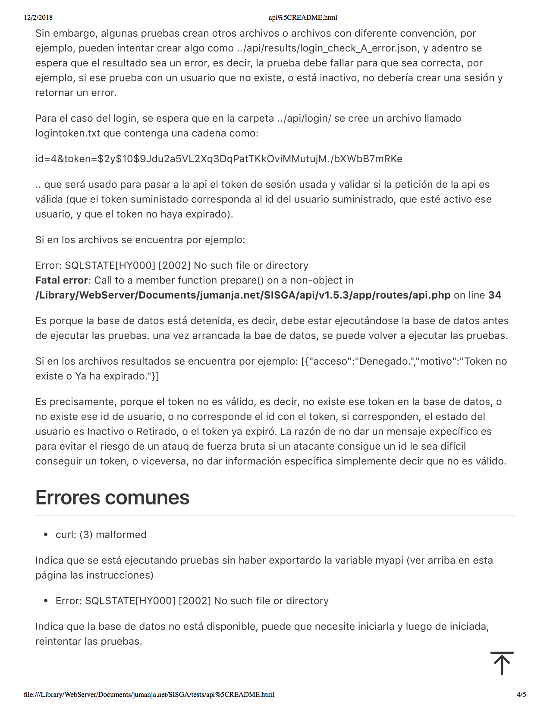
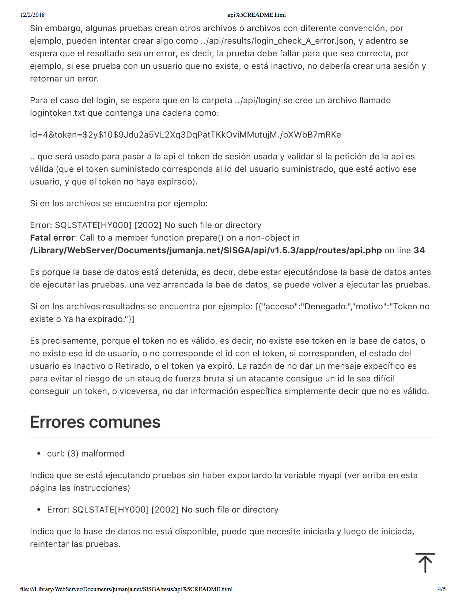

| FACULTAD DE INGENIERÍA, DISEÑO, E INNOVACIÓN | |
| PRÁCTICA APLICADA TDS | Institución Universitaria Politécnico Grancolombiano |
| FACULTAD DE INGENIERÍA, DISEÑO, E INNOVACIÓN | |
| PRÁCTICA APLICADA TDS | Institución Universitaria Politécnico Grancolombiano |
El presente documento recopila los aspectos fundamentales del proyecto de software realizado por estudiantes del módulo de Práctica Aplicada TDS, en el que se requiere desarrollar un software que de solución tecnológica a los requerimientos en una organización. Será complementado con diferentes anexos y entregables durante las diferentes fases.
El software a realizar tiene como propósito principal proveer a una agrupación, en este caso la Fraternidad “Laudato Si” de la Juventud Franciscana (JUFRA), de las herramientas necesarias para realizar las siguientes acciones:
El proyecto abarca la recolección de información, análisis, diseño del software, implementación, pruebas de aceptación por parte del usuario. Este proyecto se llevará a cabo en un ámbito académico por un grupo de estudiantes del Módulo de Práctica Aplicada TDS, de la Facultad de Ciencas básicas del politécnico Grancolombiano. Se estipula que este proyecto debe realizarse con la meta de cumplir con los objetivos del sistema descrito en este documento, y descritos en detalle en el documento entregable llamado ERS-Documento Especificación de Requisitos de Software. Dicho documento deberá ser revisado y aprobado tanto por los representantes designados por área cliente (usuaria) del software a construir, como por los estudiantes que elaborarán el software dentro del marco de sus actividades académicas. La solución de software debe diseñarse, implementarse y asegurar su calidad en un tiempo máximo de 11 semanas, pues en la presentación y sustentación en la semana 14 del módulo de Práctica Aplicada, el software ya debe estar funcionando, instalado, probado y aceptado por el area usuaria.
A continuación se relacionan los requerimientos Funcionales, No funcionales y de Negocio del sistema a desarrollar:
| Requerimientos Funcionales | |
|---|---|
| Nombre del Requerimiento | Control de acceso mediante usuario y clave. |
| Entradas | El código de Usuario y la contraseña (password). |
| Procesos | Valida que el usuario y contraseña pertenezcan a un usuario activo en la base de datos. |
| Salidas |
|
| Nombre del Requerimiento | Gestión de Fraternidades. |
| Entradas | Los datos de la Fraternidad como id (si es modificación), código, nombre, estado. |
| Procesos | Según la acción solicitada, realizar el ingreso, modificación, cambio de estado o marcar el estado como Retirado de una Fraternidad, siempre y cuando el usuario con sesión activa sea Administrador. |
| Salidas |
|
| Nombre del Requerimiento | Gestión de Tipos de Actas. |
| Entradas | Los datos del Tipo de acta como id (si es modificación), código, nombre, estado. |
| Procesos | Según la acción solicitada, realizar el ingreso, modificación, cambio de estado o marcar el estado como Retirado de un Tipo de Acta, siempre y cuando el usuario con sesión activa sea Administrador. |
| Salidas |
|
| Nombre del Requerimiento | Gestión de Lugares de Reunión. |
| Entradas | Los datos del Lugar de la Reunión como id (si es modificación), lugar, estado. |
| Procesos | Según la acción solicitada, realizar el ingreso, modificación, cambio de estado o marcar el estado como Retirado de un Lugar de Reunión, siempre y cuando el usuario con sesión activa sea Administrador. |
| Salidas |
|
| Nombre del Requerimiento | Gestión de Etiquetas (Palabras Clave). |
| Entradas | Los datos de la Etiqueta como id (si es modificación), etiqueta, estado. |
| Procesos | Según la acción solicitada, realizar el ingreso, modificación, cambio de estado o marcar el estado como Retirado de una Etiqueta o Palabra Clave, siempre y cuando el usuario con sesión activa NO sea Miembro de junta Regional / Nacional. |
| Salidas |
|
| Nombre del Requerimiento | Gestión de Actas. |
| Entradas | Los datos de el Acta como id (si es modificación), número de acta, Fecha, Tipo, Tema, Lugar de Reunión, Objetivos, Asistentes, Comentarios, Lugar de la Próxima Reunión, Tareas/Compromisos, Responsables Tareas/Compromisos, estado. |
| Procesos | Según la acción solicitada, realizar el ingreso, modificación, cambio de estado o marcar el estado como Retirado de un Acta, teniendo en cuenta las reglas de negocio descritas en la sección Requerimientos / Reglas de Negocio en este documento. |
| Salidas |
|
| Nombre del Requerimiento | Gestión de Usuarios. |
| Entradas | Los datos del Usuario como id (si es modificación), código de usuario, apellidos, nombres, servicio, email, contraseña (password), estado. |
| Procesos | Según la acción solicitada, realizar el ingreso, modificación, cambio de estado o marcar el estado como Retirado de un usuario, siempre y cuando el usuario con sesión activa sea Administrador. |
| Salidas |
|
| Nombre del Requerimiento | Gestión de Servicios. |
| Entradas | Los datos del Servicio o rol como id (si es modificación), código, tipo de servicio (Administrador, Miembro de Junta Local o Miembro de la Junta Regional / Nacional), estado. |
| Procesos | Según la acción solicitada, realizar el ingreso, modificación, cambio de estado o marcar el estado como Retirado de un servicio, siempre y cuando el usuario con sesión activa sea Administrador. |
| Salidas |
|
| Nombre del Requerimiento | Notificación automática por correo electrónico cuando un acta cambie de estado. |
| Entradas | El id del acta. |
| Procesos | Según los Asistentes a la reunión que corresponde al acta, se hará una petición al servidor de correo para enviar un email a cada uno de los asistentes miembros de junta local de la Fraternidad, para notificarles que el acta ha sufrido cambio de estado. De ésta forma el usuario podrá ingresar al sistema para revisar, aprobar o hacer comentarios al acta, según sea el caso. |
| Salidas |
|
| Nombre del Requerimiento | Búsqueda de actas por varios criterios, entre otros por número, fechas, estado, palabras clave. |
| Entradas | Los datos de búsqueda como Fecha Inicial y Final, Números de Acta, Tipos de Acta, Estado de Actas, Palabras clave, Lugar. |
| Procesos | Según los datos ingresados como parámetros de búsqueda, recuperar de la base de datos las actas que coincidan con esos criterios. |
| Salidas |
|
| Nombre del Requerimiento | Revisión y Aprobación de Actas. |
| Entradas | La identificación del acta (id) y la opción ya sea Revisar o Aprobar. |
| Procesos | Si el acta existe y se cumplen las condiciones descritas en la sección Requerimientos / Reglas de Negocio, se marca el acta como Revisada o Aprobada (por el usuario con sesión activa), y si se diere el caso de que es el último usuario que faltaba por aprobar, se cambiaría el estado del acta a Aprobada. |
| Salidas |
|
| Nombre del Requerimiento | Generación de archivo PDF de un acta siempre y cuando esté Aprobada. |
| Entradas | La identificación del acta (id). |
| Procesos | Si el acta existe y se cumplen las condiciones descritas en la sección Requerimientos / Reglas de Negocio, se genera un archivo PDF descargable con los datos del acta correspondiente. |
| Salidas |
|
| Nombre del Requerimiento | Informe de actas clasificado por fechas, estados y días entre creación y aprobación. |
| Entradas | Los datos de búsqueda como Fecha Inicial y Final, Números de Acta, Tipos de Acta, Estado de Actas, Palabras clave, Lugar. |
| Procesos | Según los datos ingresados como parámetros de búsqueda, recuperar de la base de datos las actas que coincidan con esos criterios. |
| Salidas |
|
| Requerimientos No Funcionales |
|---|
Eficiencia
|
Usabilidad
|
Seguridad
|
| Requerimientos y Reglas de Negocio |
|---|
|
|
|
|
|
|
El modelo elegido para la realización de este proyecto de desarrollo de software, es el modelo incremental, pues nos parece más acorde al tipo de proyecto y restricciones de tiempo con las que contamos para su realización. Describimos a continuación las características de este ciclo de vida junto con el diagrama de arquitectura del proyecto:
El Ciclo de vida incremental se relaciona con métodos ágiles y se caracteriza por que en este ciclo de vida se divide el Proyecto en porciones de producto, servicio o resultado que cumplen parámetros de completitud. Es decir, a cada una de éstas divisiones se le denomina Incremento, y cada incremento constituye una parte considerada completa de ciertas funcionalidades, y cuando se realicen todos los incrementos tendremos todas las porciones completas, por lo que se tendrá el 100% del Proyecto completado. Se va produciendo entonces el entregable con nuevas funcionalidades completas según el criterio del incremento, pero solo cuando se termina el Proyecto se considera con capacidad necesaria y suficiente al entregable, es decir, hasta la iteración final.

| Nombre | Roles y Funciones Principales |
|---|---|
| Cristian Alonso |
Administrador de la Configuración y Desarrollador Funciones como Administrador de la Configuración
Funciones como Desarrollador
|
| Sneider Durango |
Analista de Requerimientos y Desarrollador Funciones como Analista de Requerimientos
Funciones como Desarrollador
|
| Juan Manjarrés |
Arquitecto y Desarrollador Líder Funciones como Arquitecto
Funciones como Desarrollador Líder
|
| Liana Rodríguez |
Gerente de Proyecto y Desarrolladora Funciones como Gerente de Proyecto
Funciones como Desarrolladora
|
| Leonardo Zambrano |
Gerente de Calidad y Desarrollador Funciones como Gerente de Calidad
Funciones como Desarrollador
|
Usaremos una convención de colores para representar la persona o grupo responsable de las actividades correspondientes. A continuación relacionamos a manera de cronograma resumido, cada semana del proyecto con las actividades a realizar:
| Convención Responsable Principal | |
|---|---|
| Administrador de la Configuración (Cristian Alonso) | AC |
| Analista de Requerimientos (Sneider Durango) | AR |
| Arquitecto de software (Juan Manjarrés) | AS |
| Cliente (JUFRA) | CL |
| Gerente de Calidad (Leonardo Zambrano) | QA |
| Desarrollo (Todo el Grupo) | DV |
| Gerente del Proyecto (Liana Rodríguez) | PM |


Acepto que este documento representa nuestro mejor entendimiento de los requerimientos para este proyecto hoy y el sistema descrito podrá satisfacerá nuestras necesidades. Acepto hacer futuros cambios siempre y cuando sigan la línea definida de cambios del proyecto. Me doy cuenta que los cambios aprobados podrían requerir recursos adicionales incluyendo variación de las fechas acordadas para el proyecto, por lo que se podrían establecer futuros proyectos para poder completar dichos cambios.
Este documento especifica los requerimientos para el Software que hemos denominado Sistema para la Gestión de Actas Online al que nos referiremos como SISGA. El documento cubrirá la totalidad de requerimientos del Sistema.
Este documento sigue las convenciones de tipografía y recomendaciones sugeridas en la plantilla SRS y la adapta a las necesidades puntuales la Plantilla SRS (traducida al Español) Copyright © 1999 by Karl E. Wiegers. Adicionalmente empleará una convención para identificar claramente los componentes de la siguiente forma:
| REQ-01, REQ-02, … | Requerimientos Funcionales. |
| RNF-01, RNF-02, … | Requerimientos No Funcionales. |
| NEG-01, NEG-02, … | Reglas de Negocio. |
| DIA-01, DIA-02, … | Diagramas. |
| TAB-01, TAB-02, … | Tablas. |
| CAS-01, CAS-02, … | Casos de Uso. |
Cuando es necesario, se resaltará la importancia de una palabra o frase dentro del texto para mayor visibilidad. Por ejemplo: "En el encabezado encontrará el enlace para cerrar la sesión".
Si se considera necesario, se adicionará un párrafo que contendrá una observación o comentario importante usando itálicas, en la siguiente forma:
Nota: Este es un ejemplo de un texto importante a tener en cuenta.
Este documento está dirigido a lectores de diversos perfiles involucrados en varios roles relacionados con el Proyecto, tales como: Desarrolladores, Gerentes de Proyecto, Usuarios, Personal de pruebas y calidad, y escritores de documentación. Debido a la variedad de perfiles se ha tratado de utilizar el lenguaje más conciso y sencillo, para ser entendible por la diversidad de audiencias.
El software a realizar tiene como propósito principal proveer a una agrupación, en este caso la Fraternidad “Laudato Si” de la Juventud Franciscana (JUFRA), de las herramientas necesarias para crear, modificar, revisar y ya sea eliminar o aprobar en línea las actas formales fruto de sus reuniones periódicas. Permitirá otorgar acceso solo de consulta a usuarios que no pertenecen a la fraternidad (como por ejemplo a la Junta Regional, que tiene labores de auditoría de éstas actas), generará notificaciones via email cuando un acta cambie de estado y permitirá buscar actas por diferentes criterios y generar un documento PDF con el contenido de un acta para ser impreso y archivado físicamente si es necesario.
El proyecto abarca la recolección de información, análisis, diseño del software, implementación, pruebas de aceptación por parte del usuario. Este proyecto se llevará a cabo en un ámbito académico por un grupo de estudiantes del Módulo de Práctica Aplicada TDS, de la Facultad de Ingeniería, Diseño e Innovación del Politécnico Grancolombiano. Se estipula que este proyecto debe realizarse con la meta de cumplir con los objetivos del sistema descrito en este documento, ERS-Documento Especificación de Requisitos de Software. Este documento deberá ser revisado y aprobado tanto por los representantes designados por área cliente (usuaria) del software a construir, como por los estudiantes que elaborarán el software dentro del marco de sus actividades académicas.
La solución de software debe diseñarse, e implementarse en un tiempo máximo de 11 semanas, pues en la presentación y sustentación en la semana 14 del módulo de Práctica Aplicada, el software ya debe estar funcionando, instalado, probado y aceptado por el area usuaria. Se liberará bajo licencia MIT (código abierto y utilizable bajo cualquier modalidad).
La documentación completa referente a este proyecto se encuentra disponible en el siguiente enlace: http://jumanja.net/SISGA/docs
Este producto de software nace de la necesidad específica de sistematizar el proceso de gestión de actas y será desarrollado a la medida, sin embargo, se introducirán las bases para expandirlo en futuras fases posteriores a este proyecto, buscando llevar a este software a ser un producto viable para otras fraternidades, a la Junta Nacional e incluso ser un producto que pueda ser ofrecido a otros tipos de organizaciones con necesidades similares.
A continuación se describe en forma general las funcionalidades que el software deberá permitir realizar (más adelante en este documento se relacionan en detalle todas las funcionalidades):
Nota: Al utilizar la palabra Gestión dentro de las funcionalidades se hace referencia a Adición, Modificación, y Cambio de Estado de datos referente a la información – por ejemplo, si hablamos de Usuarios, la Gestión de usuarios sería la funcionalidad de poder Adicionar, Cambiar ciertos datos, Activar/Desactivar al usuario, y Eliminar un usuario.
El sistema será utilizado por los siguientes grupos o tipos de usuario:
Administrador: Tendrá habilitadas las funciones de gestión de las fraternidades, los integrantes de las fraternidades (los usuarios), los tipos de acta y los servicios que prestan dichos usuarios (roles de usuario).
Integrantes de Junta Local: Al prestar diferentes servicios, se subdividen en cada agrupación (fraternidad) en:
Integrantes de Junta Regional y de Junta Nacional: Que usarán el sistema para buscar y revisar el contenido de las actas, tendrán acceso de solo lectura. Podremos considerar que este grupo serían usuario Invitados o Visitantes que solo podrán consultar información.
El sistema operará en formato web, usando los lenguajes HTML, CSS, JavaScript y librerías adicionales para el frontend (capa visible para los usuarios). En su backend (capa invisible a los usuarios) se desarrollará utilizando PHP5+ mediante la creación de una API (Interfaz de programación de aplicaciones por sus siglas en inglés) que a su vez se conectará a una base de datos MySql 5.0+ . Cualquier sistema operativo y servidor web que soporte esta tecnología podrá ser utilizado, pero se sugiere servidor web Apache 2.0+ y sistema operativo Linux Ubuntu 12+.
Como restricciones de diseño e implementación tenemos:
Junto con el software desarrollado, se entregarán mensajes de ayuda online dentro del sistema y el manual de usuario y manual técnico (de administrador). Se adicionará información al momento de la entrega como instrucciones para realizar procedimientos específicos, al igual que este documento de especificaciones, diagramas de casos de uso, y diagramas de entidad relación (referente a la base de datos).
Se diseñará la interfaz del usuario utilizando el framework css materialize, que permite adaptabilidad a diferentes dispositivos mediante el concepto RWD (Diseño de software responsivo/adaptativo –por sus siglas en inglés). Como imagen corporativa base, se utilizará la de la Fraternidad “Laudato Si”. A continuación se describen algunos de los componentes generales a todas las pantallas:
La mayoría de las pantallas del sistema estará conformada por: Encabezado, Menú de Opciones, Contenido y Pie de Página.
En el encabezado: Botón para mostrar/ocultar el menú de opciones, Título. En el menú de opciones: Nombre del usuario de la sesión, Lista de opciones habilitadas para este usuario según el servicio (rol) que presta a la fraternidad. En el contenido: Esta sección variará según la opción elegida, en general se conformará por Título de la opción, elementos de captura y/o muestra de información, botones y/o enlaces para realizar acciones, y enlaces tanto a ayudas como a otras opciones relacionadas. En el pie de página: Datos de contacto de la fraternidad y de contacto técnicos y de licenciamiento, y enlace a términos y servicios.
El sistema se comunicará via protocolo HTTP entre su frontend y su backend que a su vez se conectará ida y vuelta al motor de base de datos via TCP/IP. El backend devolverá los resultados también vía HTTP al navegador usado. Se diseñará y se intentará implementar de forma que se pueda usar en múltiples navegadores y múltiples sistemas operativos incluyendo los de dispositivos móviles.
El sistema se comunicará via protocolo http entre su frontend (HTML + CSS + JavaScript y librerías) y su backend (API http rest en php + librerías) que a su vez se conectará al motor de base de datos MySql. Los resultados se devolverán también vía http response al navegador usado.
El sistema utilizará interfaz de comunicaciones pues realizará notificaciones vía email usando SMTP al servidor de correo del hosting a utilizar.
Los siguientes son las funcionalidades o Requisitos Funcionales del sistema.
Nota 1: Al utilizar la palabra Gestión dentro de las funcionalidades se hace referencia a Adición, Modificación, y Cambio de Estado de datos referente a la información.
Nota 2: La prioridad de las funcionalidades será Alta, Media y Baja.
| Código | Prioridad | Requisitos Funcionales Generales del Sistema |
|---|---|---|
| REQ-001 | Alta | Control de acceso mediante usuario y clave. |
| REQ-002 | Alta | Gestión de Fraternidades. |
| REQ-003 | Alta | Gestión los Tipos de Actas. |
| REQ-004 | Alta | Gestión de Lugares de Reunión. |
| REQ-005 | Alta | Gestión de Etiquetas (palabras clave). |
| REQ-006 | Alta | Gestión de Actas. |
| REQ-007 | Alta | Gestión de Usuarios. |
| REQ-008 | Alta | Gestión de Servicios. |
| REQ-009 | Baja | Notificación automática por correo electrónico cuando un acta cambie de estado. |
| REQ-010 | Media | Búsqueda de actas por varios criterios, entre otros por número, fechas, estado, palabras clave. |
| REQ-011 | Media | Revisión y Aprobación de Actas. |
| REQ-012 | Media | Generación de archivo PDF de un acta siempre y cuando esté Aprobada. |
| REQ-013 | Baja | Informe de actas clasificado por fechas, estados y días entre creación y aprobación. |
Pasaremos a detallar entonces cada uno de los requisitos funcionales identificados, con la estructura: Nombre Requerimiento, Código, Prioridad, Entradas, Procesos y Salidas:
| Nombre del Requerimiento | Control de acceso mediante usuario y clave. |
| Código | REQ-001 Prioridad: ALTA |
| Entradas | El código de Usuario y la contraseña (password). |
| Proceso | Valida que el usuario y contraseña pertenezcan a un usuario activo en la base de datos. |
| Salidas |
|
| Nombre del Requerimiento | Gestión de Fraternidades. |
| Código | REQ-002 Prioridad: ALTA |
| Entradas | Los datos de la Fraternidad como id (si es modificación), código, nombre, estado. |
| Proceso | Según la acción solicitada, realizar el ingreso, modificación, cambio de estado o marcar el estado como Retirado de una Fraternidad, siempre y cuando el usuario con sesión activa sea Administrador. |
| Salidas |
|
| Nombre del Requerimiento | Gestión de Tipos de Acta |
| Código | REQ-003 Prioridad: ALTA |
| Entradas | Los datos del Tipo de acta como id (si es modificación), código, nombre, estado. |
| Proceso | Según la acción solicitada, realizar el ingreso, modificación, cambio de estado o marcar el estado como Retirado de un Tipo de Acta, siempre y cuando el usuario con sesión activa sea Administrador. |
| Salidas |
|
| Nombre del Requerimiento | Gestión de Etiquetas (Palabras Clave). |
| Código | REQ-004 Prioridad: ALTA |
| Entradas | Los datos de la Etiqueta como id (si es modificación), etiqueta, estado. |
| Proceso | Según la acción solicitada, realizar el ingreso, modificación, cambio de estado o marcar el estado como Retirado de una Etiqueta o Palabra Clave, siempre y cuando el usuario con sesión activa NO sea Miembro de junta Regional / Local. |
| Salidas |
|
| Nombre del Requerimiento | Gestión de Actas. |
| Código | REQ-005 Prioridad: ALTA |
| Entradas | Los datos de el Acta como id (si es modificación), número de acta, Fecha, Tipo, Tema, Lugar de Reunión, Objetivos, Asistentes, Comentarios, Lugar de la Próxima Reunión, Tareas/Compromisos, Responsables Tareas/Compromisos, estado. |
| Proceso | Según la acción solicitada, realizar el ingreso, modificación, cambio de estado o marcar el estado como Retirado de un Acta, teniendo en cuenta las reglas de negocio descritas en la sección Requerimientos / Reglas de Negocio en este documento. |
| Salidas |
|
| Nombre del Requerimiento | Gestión de Usuarios. |
| Código | REQ-006 Prioridad: ALTA |
| Entradas | Los datos del Usuario como id (si es modificación), código de usuario, apellidos, nombres, servicio, email, contraseña (password), estado. |
| Proceso | Según la acción solicitada, realizar el ingreso, modificación, cambio de estado o marcar el estado como Retirado de un usuario, siempre y cuando el usuario con sesión activa sea Administrador. |
| Salidas |
|
| Nombre del Requerimiento | Gestión de Servicios. |
| Código | REQ-007 Prioridad: ALTA |
| Entradas | Los datos del Servicio o rol como id (si es modificación), código, tipo de servicio (Administrador, Miembro de Junta Local o Miembro de la Junta Regional / Nacional), estado. |
| Proceso | Según la acción solicitada, realizar el ingreso, modificación, cambio de estado o marcar el estado como Retirado de un servicio, siempre y cuando el usuario con sesión activa sea Administrador. |
| Salidas |
|
| Nombre del Requerimiento | Notificación automática por correo electrónico cuando un acta cambie de estado. |
| Código | REQ-008 Prioridad: ALTA |
| Entradas | Los datos del id del acta. |
| Proceso | Según los Asistentes a la reunión que corresponde al acta, se hará una petición al servidor de correo para enviar un email a cada uno de los asistentes miembros de junta local de la Fraternidad, para notificarles que el acta ha sufrido cambio de estado. De ésta forma el usuario podrá ingresar al sistema para revisar, aprobar o hacer comentarios al acta, según sea el caso. |
| Salidas |
|
| Nombre del Requerimiento | Búsqueda de actas por varios criterios, entre otros por número, fechas, estado, palabras clave. |
| Código | REQ-009 Prioridad: BAJA |
| Entradas | Los datos de búsqueda como Fecha Inicial y Final, Números de Acta, Tipos de Acta, Estado de Actas, Palabras clave, Lugar. |
| Proceso | Según los datos ingresados como parámetros de búsqueda, recuperar de la base de datos las actas que coincidan con esos criterios. |
| Salidas |
|
| Nombre del Requerimiento | Revisión y Aprobación de Actas. |
| Código | REQ-010 Prioridad: MEDIA |
| Entradas | La identificación del acta (id) y la opción ya sea Revisar o Aprobar. |
| Proceso | Si el acta existe y se cumplen las condiciones descritas en la sección Requerimientos / Reglas de Negocio, se marca el acta como Revisada o Aprobada (por el usuario con sesión activa), y si se diere el caso de que es el último usuario que faltaba por aprobar, se cambiaría el estado del acta a Aprobada. |
| Salidas |
|
| Nombre del Requerimiento | Generación de archivo PDF de un acta siempre y cuando esté Aprobada. |
| Código | REQ-011 Prioridad: MEDIA |
| Entradas | La identificación del acta (id). |
| Proceso | Si el acta existe y se cumplen las condiciones descritas en la sección Requerimientos / Reglas de Negocio, se genera un archivo PDF descargable con los datos del acta correspondiente. |
| Salidas |
|
| Nombre del Requerimiento | Informe de actas clasificado por fechas, estados y días entre creación y aprobación. |
| Código | REQ-012 Prioridad: BAJA |
| Entradas | Los datos de búsqueda como Fecha Inicial y Final, Números de Acta, Tipos de Acta, Estado de Actas, Palabras clave, Lugar. |
| Proceso | Según los datos ingresados como parámetros de búsqueda, recuperar de la base de datos las actas que coincidan con esos criterios. |
| Salidas |
|
De acuerdo al levantamiento de información realizado con los integrantes de la Junta Local, identificamos los siguientes casos de uso:
Para mayor claridad, a continuación presentamos el diagrama Integrado de casos de uso detectados. Los tipos de usuario (Actores) identificados descritos previamente utilizarán las funcionalidades de este sistema de la forma que se representa en el siguiente diagrama:

NOTA: En el item 2.4 Documentación de Casos de Uso Se encuentran los casos de uso en detalle.
| Requerimientos No Funcionales |
|---|
Eficiencia
|
Usabilidad
|
Seguridad
|
No se relacionan atributos de calidad de software específicos, sin embargo, se implementarán casos de prueba pertinentes para alcanzar atributos como testeabilidad, correctitud, contra los requerimientos de éste documento y casos de uso.
Se clasificarán los casos de prueba como Obligatorios, Requeridos, y Postergables.
Obligatorios: Si un caso de prueba falla, y se ha catalogado como Obligatorio, es porque tiene un impacto muy grande en el sistema y se debe detener la entrega hasta que el caso de prueba entregue resultado exitoso.
Requeridos: Si un caso de prueba falla, y se ha catalogado como Requerido, es porque tiene un impacto medio en el sistema y se entra a evaluar si fue justificado y poco probable que se repita en producción, se evalúa el impacto de entregarlo resuelto o aplazarlo.
Postergable: Si un caso de prueba falla, y se ha catalogado como Postergable, no se detiene la entrega y se marca como bug (defecto) para la siguiente entrega, siempre y cuando no se haya postergado antes en más de una ocasión.
Se aplicarán como métricas porcentajes de éxitos en las pruebas contra el porcentaje de 100% de resultados esperados con un margen de error del 5%, de la siguiente forma:
| Requerimientos y Reglas de Negocio |
|---|
|
|
|
|
|
|
Se requiere que se fundamenten las bases dentro del diseño y la base de datos, para la internacionalización del sistema. Esto implica que en la configuración del usuario, se designará que el sistema utilice para ese usuario particular, un idioma disponible en el sistema. Esto incluye que puedan ser mostrados en más de un idioma: Las etiquetas, mensajes, diálogos, títulos, enlaces y botones del sistema. Esto no incluye: los datos que el usuario digite dentro del sistema, es decir, no habrá forma de controlar si el usuario digita palabras o contenido en otro idioma.
Nota: Para este proyecto se contemplarán en pruebas y se estimará completado el uso de un solo idioma (Español), es decir, el cumplimiento de un segundo idioma implementado se debe dar en un proyecto posterior.
API – Interfaz de programación de aplicaciones – por sus siglas en inglés, es una las formas en que una pieza de software puede ser utilizada por otra, es decir, provee una lista de funcionalidades con parámetros especificados mediante programación, para que un software pueda enviar mensajes o instrucciones a otro software, y a su vez pueda leer las respuestas recibidas.
Backend – Se le denomina a un conjunto de piezas de software que interactúan entre si del lado del servidor, usualmente no vistas por un usuario, pero que realiza las funcionalidades mayormente relacionadas con comunicación, almacenamiento y procesamiento de datos normalmente almacenadas en una base de datos.
Base de Datos – Conjunto de Datos organizados y normalizados que siguen una estructura definida y que permiten operaciones de almacenamiento, edición, recuperación, procesamiento, cálculo sobre sus datos. Entre las más reconocidas encontramos la base de datos Oracle, PostgreSQL, MySQL.
Frontend – Se le denomina a un conjunto de piezas de software que interactúan entre sí del lado del cliente, siendo la parte que normalmente es vista por el usuario, se encarga mayormente de proveer la interfaz entre el usuario y el sistema, y de llamar o invocar funcionalidades al Backend, y procesar las respuestas obtenidas para mostrarlas en la pantalla del usuario.
Hardware - Pieza o conjunto de piezas físicas que usualmente permiten alojar piezas digitales llamadas Software con las que se determina mediante códigos llamados programas el comportamiento de sus partes físicas
HTTP - Protocolo de transferencia de hipertexto (por sus siglas en inglés) mayormente usado para comunicar software como navegadores y otras piezas de software, comunicando a navegadores (browsers) del lado del cliente con servidores normalmente alojados en ubicaciones físicas lejanas y disponibles via Internet.
HTTPS – Protocolo que complementa al protocolo http y que entrega un nivel adicional de seguridad debido a la encriptación de los datos.
Navegador – Pieza de Software que permite a un usuario visitar páginas o sitios web. Entre los más conocidos está Google Chrome, Mozilla Firefox, Internet Explorer.
Sistema Operativo – Conjunto de piezas de Software que permiten a un computador o dispositivo, realizar las operaciones básicas centrales de su funcionamiento. Entre los más conocidos se encuentran Microsoft Windows, Linux, OS, iOS, Android.
Software - Pieza o conjunto de piezas digitales que permiten al un sistema digital realizar acciones, funcionalidades, desarrolladas en un lenguaje de programación por uno o más desarrolladores, para alcanzar un fin determinado.
TCP/IP – Protocolo de redes informáticas, que provee las bases de la comunicación en Internet por su método de verificación/control de transferencia de paquetes de información y así confirmar si toda la información seccionada en paquetes y enviada en capas inferiores de éste protocolo, se entregaron al destinatario como se esperaba.
De acuerdo al levantamiento de información realizado con los integrantes de la Junta Local, identificamos los siguientes casos de uso. Para mayor claridad, a continuación presentamos el diagrama Integrado de casos de uso detectados, luego la lista, y luego el detalle de cada caso:
| Referencia | Nombre del Caso de Uso |
|---|---|
| CAS-001 | Ingresar al Sistema |
| CAS-002 | Validar Usuario |
| CAS-003 | Iniciar Sesión |
| CAS-004 | Cerrar Sesión |
| CAS-005 | Gestión de Fraternidades |
| CAS-006 | Gestión de Lugares de Reunión |
| CAS-007 | Gestión de Servicios |
| CAS-008 | Gestión de Tipos de Actas |
| CAS-009 | Gestión de Usuarios |
| CAS-010 | Gestión de Etiquetas |
| CAS-011 | Elaborar Acta |
| CAS-012 | Guardar Progreso |
| CAS-013 | Guardar Preliminar |
| CAS-014 | Notificación vía Email |
| CAS-015 | Actas por Aprobar |
| CAS-016 | Aprobar Acta |
| CAS-017 | Generar Acta en PDF |
| CAS-018 | Actas por Revisar |
| CAS-019 | Revisar Acta |
| CAS-020 | Buscador de Actas |
| CAS-021 | Informe de Actas |

| CAS-001 | |
|---|---|
| Caso de Uso | CAS-001 Ingresar al Sistema |
| Actor(es) | Usuarios del Sistema |
| Descripción | Captura los datos que el usuario suministra al sistema, retorna los datos de una sesión si los datos son válidos |
| Tipo | Primario |
| Datos de Entrada | Usuario, Contraseña. |
| Datos de Salida | Un token de sesión, el tipo de servicio, el servicio, el id del usuario si los datos son válidos. Un mensaje de error negando el acceso si los datos no son válidos |
| Precondición | El actor (el usuario) debe estar registrado previamente en el sistema para poder recibir el acceso. |
| Secuencia Normal | El actor ingresa mediante un navegador web al aplicativo, y cuando aparece la interfaz gráfica digita el Usuario, Contraseña y hace click en el botón Entrar. Se llama al caso de uso CAS-002 Validar Usuario |
| Postcondición | Se crea una sesión de usuario. |
| Excepciones | El usuario no está registrado, la contraseña no coincide con el usuario, el usuario No está activo, no se obtuvieron los datos por que no hay conexión de red entre la API y la base de datos. |
| Prioridad | Alta |
| CAS-002 | |
|---|---|
| Caso de Uso | CAS-002 Validar Usuario |
| Actor(es) | Usuarios del Sistema |
| Descripción | Determina si los datos del usuario que está intentando ingresar, son válidos. |
| Tipo | Secundario |
| Datos de Entrada | Usuario, Contraseña |
| Datos de Salida | Un token de sesión, el tipo de servicio, el servicio, el id del usuario si los datos son válidos.
Un mensaje de error negando el acceso si los datos no son válidos. |
| Precondición | El actor (el usuario) debe estar registrado previamente en el sistema para poder recibir el acceso. |
| Secuencia Normal | Este caso de uso recibe del Caso CAS-001 Ingresar al Sistema, los datos de Usuario y Clave para realizar la validación encriptando la clave y comparándola con la clave del usuario que está intentando ingresar. Si el usuario existe, la clave corresponde, y el usuario está activo, llama al caso CAS-003 Iniciar Sesión para generar la sesión de usuario. |
| Postcondición | Se crea una sesión de usuario. |
| Excepciones | El usuario no está registrado, la contraseña no coincide con el usuario, el usuario No está activo, no se obtuvieron los datos por que no hay conexión de red entre la API y la base de datos. |
| Prioridad | Alta |
| CAS-003 | |
|---|---|
| Caso de Uso | CAS-003 Iniciar Sesión |
| Actor(es) | Usuarios del Sistema |
| Descripción | Genera un token encriptado y una fecha hora de expiración del token, guardándolo en la tabla de usuarios, en el registro del usuario al que le corresponde la sesión. |
| Tipo | Secundario |
| Datos de Entrada | Usuario, Contraseña |
| Datos de Salida | Un token de sesión, el tipo de servicio, el servicio, el id del usuario si los datos son válidos.
Un mensaje de error negando el acceso si los datos no son válidos. |
| Precondición | El actor (el usuario) debe estar registrado previamente en el sistema para poder recibir el acceso. |
| Secuencia Normal | Este caso de uso recibe del Caso CAS-001 Ingresar al Sistema, los datos de Usuario y Clave para realizar la validación encriptando la clave y comparándola con la clave del usuario que está intentando ingresar. Si el usuario existe, la clave corresponde, y el usuario está activo, llama al caso CAS-003 Iniciar Sesión para generar la sesión de usuario. |
| Postcondición | Se crea una sesión de usuario. |
| Excepciones | El usuario no está registrado, la contraseña no coincide con el usuario, el usuario No está activo, no se obtuvieron los datos por que no hay conexión de red entre la API y la base de datos. |
| Prioridad | Alta |
| CAS-004 | |
|---|---|
| Caso de Uso | CAS-004 Cerrar Sesión |
| Actor(es) | Usuarios del Sistema |
| Descripción | Remueve los datos de la sesión actualmente vigente en la tabla de usuarios. |
| Tipo | Secundario |
| Datos de Entrada | Usuario, Token |
| Datos de Salida | Número de registros actualizados.
Un mensaje de error si no se pudo realizar la operación |
| Precondición | El actor (el usuario) debe tener una sesión activa |
| Secuencia Normal | Este caso de uso recibe del Caso CAS-001 Ingresar al Sistema, los datos de Usuario y Clave para realizar la validación encriptando la clave y comparándola con la clave del usuario que está intentando ingresar. Si el usuario existe, la clave corresponde, y el usuario está activo, llama al caso CAS-003 Iniciar Sesión para generar la sesión de usuario. |
| Postcondición | Se cierra una sesión de usuario. |
| Excepciones | El usuario no tiene una sesión iniciada, no se obtuvieron los datos por que no hay conexión de red entre la API y la base de datos. |
| Prioridad | Alta |

| CAS-005 | |
|---|---|
| Caso de Uso | CAS-005 Gestión de Fraternidades |
| Actor(es) | Administrador del Sistema |
| Descripción | Permite Adicionar, Modificar, Cambiar de Estado los registros de la tabla de Fraternidades |
| Tipo | Primario |
| Datos de Entrada | Elección de acción a realizar ya sea agregar registro, elegir registro para modificar su información o solo su estado. También la información a actualizar en la base de datos |
| Datos de Salida | Número de registros actualizados.
Un mensaje de error si no se pudo realizar la operación |
| Precondición | El actor (el usuario) debe tener una sesión activa y ser usuario Administador |
| Secuencia Normal | Este caso de uso primario recibe la identificación del registro a actualizar, y sus datos. Si el registro es nuevo, lo adiciona. No hay borrado físico, solo borrado lógico en la base de datos si se cambia el estado de Activo a Retirado. También hay un estado Inactivo si no se quiere borrar lógicamente el registro sino que se quiere desactivarlo temporalmente. |
| Postcondición | Se actualiza la información de la tabla en la base de datos. |
| Excepciones | El usuario no tiene una sesión iniciada, o la sesión expiró, o no se obtuvieron los datos por que no hay conexión de red entre la API y la base de datos. |
| Prioridad | Alta |
| CAS-006 | |
|---|---|
| Caso de Uso | CAS-006 Gestión de Lugares de Reunión |
| Actor(es) | Administrador del Sistema |
| Descripción | Permite Adicionar, Modificar, Cambiar de Estado los registros de la tabla de Lugares de Reunión. |
| Tipo | Primario |
| Datos de Entrada | Elección de acción a realizar ya sea agregar registro, elegir registro para modificar su información o solo su estado. También la información a actualizar en la base de datos. |
| Datos de Salida | Número de registros actualizados. Un mensaje de error si no se pudo realizar la operación. |
| Precondición | El actor (el usuario) debe tener una sesión activa y ser usuario Administador. |
| Secuencia Normal | Este caso de uso primario recibe la identificación del registro a actualizar, y sus datos. Si el registro es nuevo, lo adiciona. No hay borrado físico, solo borrado lógico en la base de datos si se cambia el estado de Activo a Retirado. También hay un estado Inactivo si no se quiere borrar lógicamente el registro sino que se quiere desactivarlo temporalmente. |
| Postcondición | Se actualiza la información de la tabla en la base de datos. |
| Excepciones | El usuario no tiene una sesión iniciada, o la sesión expiró, o no se obtuvieron los datos por que no hay conexión de red entre la API y la base de datos. |
| Prioridad | Alta |
| CAS-007 | |
|---|---|
| Caso de Uso | CAS-007 Gestión de Servicios |
| Actor(es) | Administrador del Sistema |
| Descripción | Permite Adicionar, Modificar, Cambiar de Estado los registros de la tabla de Servicios. |
| Tipo | Primario |
| Datos de Entrada | Elección de acción a realizar ya sea agregar registro, elegir registro para modificar su información o solo su estado. También la información a actualizar en la base de datos. |
| Datos de Salida | Número de registros actualizados.
Un mensaje de error si no se pudo realizar la operación. |
| Precondición | El actor (el usuario) debe tener una sesión activa y ser usuario Administador. |
| Secuencia Normal | Este caso de uso primario recibe la identificación del registro a actualizar, y sus datos. Si el registro es nuevo, lo adiciona. No hay borrado físico, solo borrado lógico en la base de datos si se cambia el estado de Activo a Retirado. También hay un estado Inactivo si no se quiere borrar lógicamente el registro sino que se quiere desactivarlo temporalmente. |
| Postcondición | Se actualiza la información de la tabla en la base de datos. |
| Excepciones | El usuario no tiene una sesión iniciada, o la sesión expiró, o no se obtuvieron los datos por que no hay conexión de red entre la API y la base de datos. |
| Prioridad | Alta |
| CAS-008 | |
|---|---|
| Caso de Uso | CAS-008 Gestión de Tipos de acta |
| Actor(es) | Administrador del Sistema |
| Descripción | Permite Adicionar, Modificar, Cambiar de Estado los registros de la tabla de Tipos de Acta. |
| Tipo | Primario |
| Datos de Entrada | Elección de acción a realizar ya sea agregar registro, elegir registro para modificar su información o solo su estado. También la información a actualizar en la base de datos. |
| Datos de Salida | Número de registros actualizados.
Un mensaje de error si no se pudo realizar la operación. |
| Precondición | El actor (el usuario) debe tener una sesión activa y ser usuario Administador. |
| Secuencia Normal | Este caso de uso primario recibe la identificación del registro a actualizar, y sus datos. Si el registro es nuevo, lo adiciona. No hay borrado físico, solo borrado lógico en la base de datos si se cambia el estado de Activo a Retirado. También hay un estado Inactivo si no se quiere borrar lógicamente el registro sino que se quiere desactivarlo temporalmente. |
| Postcondición | Se actualiza la información de la tabla en la base de datos. |
| Excepciones | El usuario no tiene una sesión iniciada, o la sesión expiró, o no se obtuvieron los datos por que no hay conexión de red entre la API y la base de datos. |
| Prioridad | Alta |
| CAS-009 | |
|---|---|
| Caso de Uso | CAS-009 Gestión de Usuarios |
| Actor(es) | Administrador del Sistema |
| Descripción | Permite Adicionar, Modificar, Cambiar de Estado los registros de la tabla de Usuarios. |
| Tipo | Primario |
| Datos de Entrada | Elección de acción a realizar ya sea agregar registro, elegir registro para modificar su información o solo su estado. También la información a actualizar en la base de datos. |
| Datos de Salida | Número de registros actualizados.
Un mensaje de error si no se pudo realizar la operación. |
| Precondición | El actor (el usuario) debe tener una sesión activa y ser usuario Administador. |
| Secuencia Normal | Este caso de uso primario recibe la identificación del registro a actualizar, y sus datos. Si el registro es nuevo, lo adiciona. No hay borrado físico, solo borrado lógico en la base de datos si se cambia el estado de Activo a Retirado. También hay un estado Inactivo si no se quiere borrar lógicamente el registro sino que se quiere desactivarlo temporalmente. |
| Postcondición | Se actualiza la información de la tabla en la base de datos. |
| Excepciones | El usuario no tiene una sesión iniciada, o la sesión expiró, o no se obtuvieron los datos por que no hay conexión de red entre la API y la base de datos. |
| Prioridad | Alta |

| CAS-010 | |
|---|---|
| Caso de Uso | CAS-010 Gestión de Etiquetas |
| Actor(es) | Miembro de Junta Local, que preste el servicio en Secretaría. |
| Descripción | Permite Adicionar, Modificar, Cambiar de Estado en la tabla de Etiquetas. |
| Tipo | Primario |
| Datos de Entrada | Elección de acción a realizar ya sea agregar registro, elegir registro para modificar su información o solo su estado. |
| Datos de Salida | Número de registros actualizados. Un mensaje de error si no se pudo realizar la operación |
| Precondición | El actor (el usuario) debe tener una sesión activa y ser usuario Administador. |
| Secuencia Normal | Este caso de uso primario recibe la identificación del registro a actualizar, y sus datos. Si el registro es nuevo, lo adiciona. No hay borrado físico, solo borrado lógico en la base de datos si se cambia el estado de Activo a Retirado. También hay un estado Inactivo si no se quiere borrar lógicamente el registro sino que se quiere desactivarlo temporalmente. |
| Postcondición | Se actualiza la información de la tabla en la base de datos. |
| Excepciones | El usuario no tiene una sesión iniciada, o la sesión expiró, o no se obtuvieron los datos por que no hay conexión de red entre la API y la base de datos. |
| Prioridad | Alta |
| CAS-011 | |
|---|---|
| Caso de Uso | CAS-011 Elaborar Actas |
| Actor(es) | Miembro de Junta Local. |
| Descripción | Permite Adicionar, Modificar, y genera un Cambio de Estado de registros en la tabla de Actas. |
| Tipo | Primario |
| Datos de Entrada | Elección de acción a realizar ya sea agregar registro, elegir registro para modificar su información o solo su estado. |
| Datos de Salida | Número de registros actualizados.
Un mensaje de error si no se pudo realizar la operación. |
| Precondición | El actor (el usuario) debe tener una sesión activa y ser usuario Miembro de Junta Local. |
| Secuencia Normal | Este caso de uso primario recibe la identificación del registro a actualizar, y sus datos. Si el registro es nuevo, lo adiciona. No hay borrado físico, solo borrado lógico en la base de datos si se cambia el estado de Activo a Retirado. También hay un estado Inactivo si no se quiere borrar lógicamente el registro sino que se quiere desactivarlo temporalmente. Sin embargo, aplican restricciones según las reglas de Negocio descritas en el documento ERS-Especificación de Requerimientos, En Secretaría pueden Crear y modificar Actas, pero no pueden agregar comentarios. Los otros Miembros de Junta Local pueden Hacer comentarios pero no pueden ni crear ni Modificar. Este caso llama al caso CAS-012 Guardar Progreso, y al Caso CAS-013 Guardar Preliminar dependiendo sea la elección del usuario. |
| Postcondición | Se actualiza la información de la tabla en la base de datos. |
| Excepciones | El usuario no tiene una sesión iniciada, o la sesión expiró, o no se obtuvieron los datos por que no hay conexión de red entre la API y la base de datos. |
| Prioridad | Alta |
| CAS-012 | |
|---|---|
| Caso de Uso | CAS-012 Guardar Progreso |
| Actor(es) | Miembro de Junta Local, con Servicio en Secretaría. |
| Descripción | Permite Actualizar en la Base de Datos la información que tiene actualmente el Acta. |
| Tipo | Secundario |
| Datos de Entrada | Datos a actualizar del Acta. |
| Datos de Salida | Número de registros actualizados.
Un mensaje de error si no se pudo realizar la operación. |
| Precondición | El actor (el usuario) debe tener una sesión activa y ser usuario Miembro de Junta Local, con Servicio en Secretaría |
| Secuencia Normal | Este caso de uso secundario recibe la identificación del registro a actualizar, y sus datos. |
| Postcondición | Se actualiza la información de la tabla en la base de datos. |
| Excepciones | El usuario no tiene una sesión iniciada, o la sesión expiró, o no se obtuvieron los datos por que no hay conexión de red entre la API y la base de datos. |
| Prioridad | Alta |
| CAS-013 | |
|---|---|
| Caso de Uso | CAS-013 Guardar Preliminar |
| Actor(es) | Miembro de Junta Local, con Servicio en Secretaría. |
| Descripción | Permite Actualizar en la Base de Datos la información que tiene actualmente el Acta. |
| Tipo | Secundario |
| Datos de Entrada | Datos a actualizar del Acta. |
| Datos de Salida | Número de registros actualizados.
Un mensaje de error si no se pudo realizar la operación. |
| Precondición | El actor (el usuario) debe tener una sesión activa y ser usuario Miembro de Junta Local, con Servicio en Secretaría |
| Secuencia Normal | Este caso de uso secundario recibe la identificación del registro a actualizar, y sus datos. Se aplican restricciones según las reglas de Negocio descritas en el documento ERS-Especificación de Requerimientos, En Secretaría pueden Crear y modificar Actas, pero no pueden agregar comentarios. Los otros Miembros de Junta Local pueden Hacer comentarios pero no pueden ni crear ni Modificar. Este caso llama al caso CAS-014 Notificación vía email pues produce un cambio de estado, dejando el acta en estado Preliminar, y disponible para que los demás miembros la puedan revisar/ aprobar. |
| Postcondición | Se actualiza la información de la tabla en la base de datos. |
| Excepciones | El usuario no tiene una sesión iniciada, o la sesión expiró, o no se obtuvieron los datos por que no hay conexión de red entre la API y la base de datos. |
| Prioridad | Alta |
| CAS-014 | |
|---|---|
| Caso de Uso | CAS-014 Notificación Vía Email |
| Actor(es) | Miembro de Junta Local, con Servicio en Secretaría. |
| Descripción | Permite enviar un correo electrónico a los miembros asistentes de la reunión que tuvo lugar el acta. |
| Tipo | Secundario |
| Datos de Entrada | Identificación del Acta. |
| Datos de Salida | Número de registros actualizados.
Un mensaje de error si no se pudo realizar la operación. |
| Precondición | El actor (el usuario) debe tener una sesión activa y ser usuario Miembro de Junta Local, con Servicio en Secretaría. |
| Secuencia Normal | Este caso de uso secundario recibe la identificación del registro a actualizar, y sus datos. Se aplican restricciones según las reglas de Negocio descritas en el documento ERS-Especificación de Requerimientos, En Secretaría pueden Crear y modificar Actas, pero no pueden agregar comentarios. Los otros Miembros de Junta Local pueden Hacer comentarios pero no pueden ni crear ni Modificar. Este caso llama al caso CAS-014 Notificación vía email pues produce un cambio de estado, dejando el acta en estado Preliminar, y disponible para que los demás miembros la puedan revisar/ aprobar. |
| Postcondición | Se genera un correo electrónico y se intenta enviar por el servidor de correo configurado. |
| Excepciones | El usuario no tiene una sesión iniciada, o la sesión expiró, o no se obtuvieron los datos por que no hay conexión de red entre la API y la base de datos. |
| Prioridad | Baja |
| CAS-015 | |
|---|---|
| Caso de Uso | CAS-015 Actas por Aprobar |
| Actor(es) | Miembro de Junta Local |
| Descripción | Permite obtener una lista en pantalla de las actas que el usuario actual tiene por aprobar. |
| Tipo | Primario |
| Datos de Entrada | Identificación del Usuario que tiene actualmente la sesión. |
| Datos de Salida | Lista de las actas por aprobar.
Un mensaje de error si no se pudo realizar la operación. |
| Precondición | El actor (el usuario) debe tener una sesión activa y ser usuario Miembro de El actor (el usuario) debe tener una sesión activa y ser usuario Miembro de Junta Local. |
| Secuencia Normal | Este caso de uso secundario recibe la identificación del usuario que actualmente tiene la sesión, y consulta en la base de datos las actas que ese usuario tiene por aprobar. Este caso llama al caso CAS-016 Aprobar Acta si el usuario decide aprobar, o al caso CAS-019 Revisar Acta si solo quiere revisar el acta. |
| Postcondición | Se muestra en pantalla la lista de actas que el usuario tiene por aprobar. |
| Excepciones | El usuario no tiene una sesión iniciada, o la sesión expiró, o no se obtuvieron los datos por que no hay actas por aprobar para el usuario que tiene la sesión, o no hay conexión de red entre la API y la base de datos. |
| Prioridad | Media |
| CAS-016 | |
|---|---|
| Caso de Uso | CAS-016 Actas por Aprobar |
| Actor(es) | Miembro de Junta Local, con el servicio de Secretaría. |
| Descripción | Permite dar la aprobación del usuario que tiene la sesión activa, a el acta seleccionada. |
| Tipo | Secundario |
| Datos de Entrada | Identificación del Usuario que tiene actualmente la sesión e identificación del Acta Seleccionada. |
| Datos de Salida | Número de registros actualizados.
Un mensaje de error si no se pudo realizar la operación |
| Precondición | El actor (el usuario) debe tener una sesión activa y ser usuario Miembro de Junta Local, servicio de Secretaría. El acta seleccionada no debe tener aprobación por parte de ese usuario. |
| Secuencia Normal | Este caso de uso secundario recibe la identificación del usuario que actualmente tiene la sesión y la identificación de un acta seleccionada, y con esos datos retorna los datos del acta seleccionada en formato PDF para que se pueda descargar o visualizar en dicho formato. |
| Postcondición | Se muestra en pantalla o se permite descargar, el Acta en formato PDF. |
| Excepciones | El usuario no tiene una sesión iniciada, o la sesión expiró, o no se obtuvieron los datos por que el acta seleccionada no está aprobada o no hay conexión de red entre la API y la base de datos. |
| Prioridad | Media |
| CAS-017 | |
|---|---|
| Caso de Uso | CAS-017 Generar Acta en PDF |
| Actor(es) | Miembro de Junta Local, Regional, Nacional o Invitado. |
| Descripción | Permite obtener un versión del acta seleccionada en formato PDF. |
| Tipo | Secundario |
| Datos de Entrada | Identificación del Usuario que tiene actualmente la sesión e identificación del Acta Seleccionada. |
| Datos de Salida | Datos del acta seleccionada en formato PDF.
Un mensaje de error si no se pudo realizar la operación. |
| Precondición | El actor (el usuario) debe tener una sesión activa y ser usuario Miembro de Junta Local. El acta seleccionada debe estar en estado Aprobada. |
| Secuencia Normal | Este caso de uso secundario recibe la identificación del usuario que actualmente tiene la sesión y la identificación de un acta seleccionada, y con esos datos retorna los datos del acta seleccionada en formato PDF para que se pueda descargar o visualizar en dicho formato. |
| Postcondición | Se muestra en pantalla o se permite descargar, el Acta en formato PDF. |
| Excepciones | El usuario no tiene una sesión iniciada, o la sesión expiró, o no se obtuvieron los datos por que el acta seleccionada no está aprobada o no hay conexión de red entre la API y la base de datos. |
| Prioridad | Media |
| CAS-018 | |
|---|---|
| Caso de Uso | CAS-018 Actas por Revisar |
| Actor(es) | Miembro de Junta Local, Regional, Nacional o Invitado. |
| Descripción | Permite obtener una lista en pantalla de las actas que el usuario actual tiene por revisar. |
| Tipo | Secundario |
| Datos de Entrada | Identificación del Usuario que tiene actualmente la sesión. |
| Datos de Salida | Lista de las actas por revisar.
Un mensaje de error si no se pudo realizar la operación. |
| Precondición | El actor (el usuario) debe tener una sesión activa y ser usuario Miembro de Junta Local, Regional, Nacional o Invitado. |
| Secuencia Normal | Este caso de uso Primario recibe la identificación del usuario que actualmente tiene la sesión, y consulta en la base de datos las actas que ese usuario tiene por revisar. Este caso llama al caso CAS-019 Revisar Acta si el usuario decide elegir un acta para revisar. |
| Postcondición | Se muestra en pantalla la lista de actas que el usuario tiene por revisar. |
| Excepciones | El usuario no tiene una sesión iniciada, o la sesión expiró, o no se obtuvieron los datos por que no hay actas por revisar para el usuario que tiene la sesión, o no hay conexión de red entre la API y la base de datos. |
| Prioridad | Media |
| CAS-019 | |
|---|---|
| Caso de Uso | CAS-019 Revisar Acta |
| Actor(es) | Miembro de Junta Local, con el servicio de Secretaría. |
| Descripción | Permite dar la aprobación del usuario que tiene la sesión activa, a el acta seleccionada. |
| Tipo | Secundario |
| Datos de Entrada | Identificación del Usuario que tiene actualmente la sesión e identificación del Acta Seleccionada. |
| Datos de Salida | Número de registros actualizados.
Un mensaje de error si no se pudo realizar la operación |
| Precondición | El actor (el usuario) debe tener una sesión activa y ser usuario Miembro de Junta Local, servicio de Secretaría. El acta seleccionada no debe tener aprobación por parte de ese usuario. |
| Secuencia Normal | Este caso de uso secundario recibe la identificación del usuario que actualmente tiene la sesión y la identificación de un acta seleccionada, y con esos datos retorna los datos del acta seleccionada en formato PDF para que se pueda descargar o visualizar en dicho formato. |
| Postcondición | Se muestra en pantalla o se permite descargar, el Acta en formato PDF. |
| Excepciones | El usuario no tiene una sesión iniciada, o la sesión expiró, o no se obtuvieron los datos por que el acta seleccionada no está aprobada o no hay conexión de red entre la API y la base de datos. |
| Prioridad | Media |
| CAS-020 | |
|---|---|
| Caso de Uso | CAS-020 Buscador de Actas |
| Actor(es) | Miembro de Junta Local. |
| Descripción | Permite realizar una búsqueda de las actas de la base de datos. |
| Tipo | Primario |
| Datos de Entrada | Identificación del Usuario que tiene actualmente la sesión y parámetros de búsqueda del acta como números, estados, fechas, lugares y palabras clave. |
| Datos de Salida | Lista de Actas encontradas. Un mensaje de error si no se pudo realizar la operación. |
| Precondición | El actor (el usuario) debe tener una sesión activa y ser usuario Miembro de Junta Local. |
| Secuencia Normal | Este caso de uso recibe la identificación del usuario que actualmente tiene la sesión y los parámetros de búsqueda, y con esos datos retorna la lista de actas que conciden. Si el usuario decide proceder a revisar algún acta, este caso llama al caso de uso CAS-019 Revisar Acta. |
| Postcondición | Se muestra en pantalla La lista de actas coincidentes con los parámetros de búsqueda. |
| Excepciones | El usuario no tiene una sesión iniciada, o la sesión expiró, o no se obtuvieron los datos por que no se encontraron coincidencias o no hay conexión de red entre la API y la base de datos. |
| Prioridad | Media |
| CAS-021 | |
|---|---|
| Caso de Uso | CAS-021 Informe de Actas |
| Actor(es) | Miembros de la Junta Regional o Nacional e Invitados. |
| Descripción | Permite generar el Informe de Actas. |
| Tipo | Primario |
| Datos de Entrada | Parámetros del Informe como Tipos de Acta, Rango de fechas, Estado. |
| Datos de Salida | Informe en pantalla con los datos de las actas según los parámetros dados. Un mensaje de error si no se pudo realizar la operación. |
| Precondición | El actor (el usuario) debe tener una sesión activa y ser usuario Miembro de la junta Regional o Nacional o Invitado. |
| Secuencia Normal | Este caso de uso primario recibe los parámetros del informe como tipos, fechas y estado y al enviar el formulario el sistema retorna los datos en pantalla de las actas encontradas según esos parámetros. |
| Postcondición | Se muestra el Informe en pantalla. |
| Excepciones | El usuario no tiene una sesión iniciada, o la sesión expiró, o no se obtuvieron los datos por que no hay conexión de red entre la API y la base de datos. |
| Prioridad | Baja |


A continuación los diagramas de la arquitectura de la solución de software SISGA, junto con la correspondiente explicación sobre las decisiones técnicas tomadas.


Según los requerimientos identificados para este proyecto, se tomaron las siguientes decisiones de arquitectura y diseño de la solución:


El presente documento define los lineamientos a seguir para el Plan de Calidad del proyecto de software grupal realizado por estudiantes del módulo de Práctica Aplicada TDS, en el que se requiere desarrollar un software que de solución tecnológica a los requerimientos en una organización. El software a desarrollar tiene por objeto servir de herramienta para la gestión de Actas de las reuniones de la Fraternidad “Laudato Si” de la Juventud Franciscana (JUFRA).
El propósito de este plan de calidad es identificar los procedimientos de gestión de la calidad que van a ser aplicados entre el área usuaria receptora del software de gestión de actas a realizar, como los estudiantes que desarrollarán en un ámbito académico dicho software.
Este plan de calidad se aplica al desarrollo e implementación del software para la Gestión de Actas – SISGA
Cualquier actividad por fuera del desarrollo e implementación del software SISGA.
El cliente o área usuaria no ha realizado solicitudes específicas referentes a objetivos de calidad de forma cuantificable. Sin embargo, se implementarán los métodos de gestión de calidad incluyendo casos de prueba pertinentes para alcanzar atributos como testeabilidad, correctitud, contra los requerimientos y casos de uso detallados en el documento de especificaciones.
Para éste proyecto se eligió un ciclo de vida incremental, por lo que se clasificarán los casos de prueba como Obligatorios, Requeridos, y Postergables
Obligatorios: Si un caso de prueba falla, y se ha catalogado como Obligatorio, es porque tiene un impacto muy grande en el sistema y se debe detener la entrega hasta que el caso de prueba entregue resultado exitoso.
Requeridos: Si un caso de prueba falla, y se ha catalogado como Requerido, es porque tiene un impacto medio en el sistema y se entra a evaluar si fue justificado y poco probable que se repita en producción, se evalúa el impacto de entregarlo resuelto o aplazarlo.
Postergable: Si un caso de prueba falla, y se ha catalogado como Postergable, no se detiene la entrega y se marca como bug (defecto) para la siguiente entrega, siempre y cuando no se haya postergado antes en más de una ocasión.
Se aplicarán como métricas porcentajes de éxitos en las pruebas contra el porcentaje de 100% de resultados esperados con un margen de error del 5%, de la siguiente forma:
Obligatorios: Los casos de prueba deben ser exitosos en un 100%.
Requeridos: Los casos de prueba deben ser exitosos en más de un 95%.
Postergable: Los casos de prueba deben ser exitosos en más de un 50% Esto quiere decir, que si más de la mitad de los postergables fallan, debe resolverse los suficientes (y no postergar su resolución) para que se cumpla que el al menos el 50% quedó resuelto en la entrega.
El Gerente del proyecto tiene la responsabilidad total del éxito del proyecto, incluyendo la conformidad del área usuaria y el cumplimiento de los objetivos descritos.
El Gerente de Calidad es responsable de las auditorías del proyecto y seguimiento de las acciones que se deriven de ellas. Cualquier desviación del plan de calidad debe ser aprobada por el Gerente de Calidad para que dicha desviación se haga realidad.
Los actores que juegan papeles dentro de la ejecución de este proyecto, son responsables cada uno de que sus acciones y actitudes propendan por alcanzar los niveles establecidos en este plan de calidad y en general en alcanzar los objetivos propuestos tanto por el software, como por el proyecto, con niveles de satisfacción elevados en su calidad.
Este Plan de Calidad hace referencia a documentación complementaria, y se espera que dichos documentos y recursos documentales, se mantengan actualizados por sus respectivos responsables.
Los archivos relacionados con el proyecto, tanto en su código fuente, como en su documentación y registros digitales relacionados, estarán disponibles en Internet por un mínimo de 6 meses después de la entrega y cierre del proyecto (se espera que la versión productiva se aloje en los propios servidores del área usuaria o de un proveedor de hosting contratado por ese área –se asesorará al área usuaria para la implementación de la versión en producción- ). La implementación se detallará en el ítem Instalación y puesta en servicio, mas adelante en este documento.
| Nombre | Roles y Funciones Principales |
|---|---|
| Cristian Alonso |
Administrador de la Configuración y Desarrollador Funciones como Administrador de la Configuración
Funciones como Desarrollador
|
| Sneider Durango |
Analista de Requerimientos y Desarrollador Funciones como Analista de Requerimientos
Funciones como Desarrollador
|
| Juan Manjarrés |
Arquitecto y Desarrollador Líder Funciones como Arquitecto
Funciones como Desarrollador
|
| Liana Rodríguez |
Gerente de Proyecto y Desarrolladora Funciones como Gerente de Proyecto
Funciones como Desarrolladora
|
| Leonardo Zambrano |
Gerente de Calidad y Desarrollador Funciones como Gerente de Calidad
Funciones como Desarrollador
|
El elemento de entrada principal al proyecto es el documento ERS-SISGA (Documento de Especificación de Requerimientos de Software), que pueder verse en el item 2.3 ERS - Documento de Especificación de Requisitos de Software.
Una vez firmado el documento ERS por parte del área usuaria, se espera que cualquier comunicación formal sobre este proyecto, se lleve a cabo a través del Gerente del Proyecto.
El software SISGA se desarrollará con lenguajes, herramientas y librerías que no requieran de la adquisición de licencias por parte ni del cliente ni del equipo de desarrollo, al ser éste software construido en un ámbito académico y al no poseer el área usuaria presupuesto para este fin. Se proveerá durante el desarrollo de este proyecto y por un período de seis (6) meses adicionales a la entrega y cierre del proyecto, de un espacio sin costo en un plan de hosting actualmente ya en uso, en una carpeta destinada para éste fin. Luego de dichos seis (6) meses no se garantizará su disponiblidad, por lo que al momento de entregar el software, se recomendará iniciar las gestiones pertinentes para la habilitación de este software con la información real del área usuaria, en un proveedor de hosting contratado por ellos.
Las solicitudes de cambios al software que afecten a la funcionalidad deberán ser aprobadas por el supervisor del proyecto (que forma parte del área usuaria) y solo serán llevadas a cabo si son aprobadas por el Gerente del Proyecto antes que se comience a trabajar en ellos.
No se prevé que el área usuaria (ni tampoco el equipo de desarrollo) deba realizar ningúna adquisición ántes ni durante la realización del proyecto. Sólo se requerirá que el área usuaria defina la adquisición de un plan de hosting (y opcionalmente, dominio web) para su sistema de producción al finalizar los seis (6) meses del cierre del proyecto.
La disponibilidad de los items descritos en la sección de Recursos, se hará de la siguiente forma.
Código fuente: Repositorio de github. URL: https://github.com/jumanja/SISGA
Software en ejecución: Página web. URL: https://jumanja.net/SISGA/
Documentación: Página web. URL: https://jumanja.net/SISGA/docs/
No hay procesos especiales para este proyecto.
El administrador de la configuración deberá velar porque los documentos, archivos, entregables se mantengan en sus últimas versiones en las rutas y repositorios correspondientes.
El software desarrollado fruto del ejercicio académico será liberado bajo la licencia MIT, que permite ser utilizado tal cual sea desarrollado en cualquier tipo de utilización sin restricción. La información ingresada al sistema es y será de propiedad del área usuaria.
El software será entregado instalado en las rutas relacionadas en el item Instalación y puesta en servicio, y se asesorará al área usuaria en su proceso de instalación en el sistema de producción.
Una No conformidad la definiremos como un hallazgo que, a pesar de estar especificado en el documento ERS previamente aprobado, no se comporta como se definió. Una No conformidad no podrá volver a aparecer en el siguiente incremento, y por supuesto el software no podrá ser entregado en su totalidad si tiene todavía presente una No conformidad.
El progreso del proyecto será registrado y controlado de forma semanal a partir de la firma y aprobación del ERS y podrán ser presentados en reuniones de avance con el área usuaria. El desarrollador líder debe conservar registros de cualquier problema identificado que persista entre incrementos y potencialmetne se pueda convertir en No Conformidad.
Los problemas deben categorizarse según su origen:
Especificación de Requisitos (faltan o Incorrectos).
Diseño (falta o incorrecto).
Codificación (falta o incorrecta, error de interfaz, error de manejo de datos)
Al final de cada incremento deberán realizarse las acciones necesarias para verificar que se esté siguiendo las indicaciones de este plan de calidad, y tomar las decisiones correspondientes buscando siempre cumplir los objetivos de calidad dispuestos en él.
El presente documento especifica las actividades definidas como necesarias para el aseguramiento de Calidad del software SISGA a ser construído, teniendo en cuenta que el ciclo de vida de este software es de tipo Incremental, intentaremos implementar metodologías, procesos, procedimientos y buenas prácticas para el aseguramiento y control de calidad del producto de software, incluyendo diferentes tipos de pruebas, reporte de fallos, solicitudes de corrección, siguiendo los lineamenientos generales descritos en el documeneto Plan de Calidad.
A continuación se especifican los elementos de organización y responsables de la gestión de calidad del proyecto.
El Gerente de Calidad en este proyecto es el responsable de hacer la gestión de las tareas, métodos y procedimientos descritos en este documento. Trabajará de la mano del Arquitecto de Software en temas técnicos, y del Gerente de Proyecto en temas administrativos.
| Tarea | Entregable Asociado | Responsable |
|---|---|---|
| Identificar las propiedades de Calidad del proyecto. | Plan de Calidad | Gerente de Calidad |
| Elaborar el Plan de aseguramiento y control de calidad | Plan de Aseguramiento y Control de Calidad | Gerente de Calidad |
| Evaluar la calidad del producto | Informe de revisión de Calidad | Gerente de Calidad |
| Revisar que el proceso se ajuste si es necesario | Informe de revisión de Calidad | Gerente de Calidad |
| Realizar Revisión Técnica Formal Semanal | Informe de revisión Técnica Formal | Gerente de Calidad |
| Realizar evaluación final de Calidad | Informe Evaluación Final de Calidad | Gerente de Calidad |
Como responsible de la calidad formal del proyecto, el Gerente de Calidad. Sin embargo, como responsables de calidad en cada actividad que realicen en el proyecto, se encuentran todos los integrantes del equipo, puesto que deben conocer cuáles son los objetivos, lo métodos y procedimientos que pretender llevar al proyecto a un alto nivel de calidad, se espera de todos y cada uno de los integrantes del equipo realicen sus tareas de la forma esperada y entreguen sugerencias para la mejoría de la calidad y los planes de calidad del proyecto si diera a lugar.
A continuación se describen los entregables del proyecto y el Rol responsable principal de cada entregable, encargo de crear / actualizar y mantener actualizado dicho entregable a lo largo del proyecto:
| Entregable | Responsable |
|---|---|
| Documento Especificación de Requisitos de Software ERS | Analista de Requerimientos |
| Documento Modelo de Casos de Uso | Arquitecto |
| Documentación de Plan de Proyecto | Gerente de Proyecto |
| Alcance del Proyecto | Gerente de Proyecto |
| Documento de Arquitectura de Proyecto y Producto | Arquitecto |
| Documento Diagramas de Diseño de la Solución (UML) | Arquitecto |
| Modelo de Datos Relacional | Arquitecto |
| Modelo de Entidad Relación | Arquitecto |
| Documentación Técnica y de Implementación | Desarrollador Líder |
| Documento Manual del Usuario | Desarrollador Líder |
| Documento Plan de Gestión de la Configuración | Administrador de la Configuración |
| Documento Revisión Formal Semanal, y Final | Gerente de Calidad |
Se harán revisiones del producto de la siguiente forma:
Se espera que de las revisiones formales (semanalmente) se desprenda un informe en formato de hoja de cálculo basados en el siguiente Ejemplo:

Para éste proyecto se eligió un ciclo de vida incremental, por lo que se clasificarán los casos de prueba como Obligatorios, Requeridos, y Postergables.
Fórmula Métrica:
OF= (NroObligFallidos * 100) / NroTotalObligatorios
RF= (NroReqFallidos * 100) / NroTotalRequeridos
PF= (NroPostergFallidos * 100) / NroTotalPostergables
El rango aceptable para cada uno será:
| Tipo de Casos de Prueba | Rango Mínimo | Rango Máximo |
|---|---|---|
| Número de casos de prueba Obligatorios Fallidos (OF) | 100% | 100% |
| Número de casos de prueba Requeridos Fallidos (RF) | 95% | 100% |
| Número de casos de prueba Postergables Fallidos (PF) | 50% | 100% |


 



A continuación tres ejemplos, se muestra el contenido del archivo resultado, el primero exitoso con contenido, otro caso fallido, y el último exitoso pero con número de registros procesados. Se muestran para cada uno, el historial de cambios subidos al repositorio como evidencia de ejecución de pruebas unitarias para casos de uso en API de login y API de usuario:
Caso de Prueba Exitoso, el archivo resultado contiene los parámetros de token de sesión generado por el sistema.

Caso de Prueba Exitoso, el archivo resultado contiene un error de SQL, pues se intenta agregar un usuario con código admin, y ese código ya existe.


Caso de Prueba Exitoso, el archivo resultado contiene respuesta en formato json con el número de registros procesados (en este caso, 1 registro actualizado a estado "R").


Caso de Prueba Exitoso, el sistema soporta al menos cinco (5) usuarios concurrentes.
Nuestro ciclo de vida es Desarrollo Incremental, por lo que con cada incremento liberado, se entregó tanto el Control de Pruebas incluyendo los casos de uso disponibles para pruebas, al igual que el Manual de Usuario actualizado.
Sin embargo, la persona Supervisora del proyecto al iniciar prestaba el servicio como Secretaria, y cuando ya empezamos a entregar los incrementos, pasó a prestar el servicio como Presidenta, y se nombró nueva Secretaria. Al parecer la nueva Secretaria no tuvo o el tiempo o la disposición de realizar las pruebas documentadas, lo cierto es que tuvieron que buscar otra persona para que prestara ese servicio.
Sean cuales sean las razones por la que no las documentaron, nosotros si realizamos nuestras pruebas antes de liberar los incrementos, pero esta situación ocasionó que no pudieramos contar ni entregar aquí evidencias UAT por parte del área usuaria.
Nota 1: La Entrega y Aceptación por parte del área usuaria, obtuvo luego de hacer una presentación y demostración del software funcionando, a la vez que se entrenó al personal que interactuaría con el software (Miembros de la Junta Local), pero la nueva Secretaria no estuvo presente como se evidencia en la reunión de seguimiento número 2.
Nota 2: A la fecha (Diciembre 3/2018), ya hay nuevo reemplazo en las labores de Secretaría, y nos ofrecimos a capacitar a el nuevo integrante en el software (adicional a los ya entregados Manuales de Usuario y Administrador).
Relacionamos entonces a continuación, muestras de los archivos de entregados para Control para las Pruebas, la lista de las versiones de Manual de Usuario de los correspondientes incrementos:

El archivo final con la entrega, para las UAT finales quedó así:
Y esta es una muestra de las pruebas funcionales (control de calidad) antes de liberar incrementos, realizadas por el grupo de desarrollo, siguiendo la versión correspondiente del manual de usuario, tal como lo haría el usuario final:

El manual de usuario está disponible en el siguiente enlace:
https://jumanja.net/SISGA/docs/manual_usuario
El manual de administrador está disponible en el siguiente enlace:
https://jumanja.net/SISGA/docs/manual_admin
El manual técnico o de implementación está disponible en el siguiente enlace:
https://jumanja.net/SISGA/docs/manual_tecnico
El Informe de Cierre o PostMórtem está disponible en el siguiente enlace:
https://jumanja.net/SISGA/docs/postmortem
CursoDireccionProyectos.com (website, 2018)
https://www.cursodireccionproyectos.com/2018/07/ciclos-de-vida-iterativo-e-incremental-que-son/
Microsoft (Diagramas UML en msdn, website, 2018)
https://msdn.microsoft.com/es-co/library/dd409360.aspx